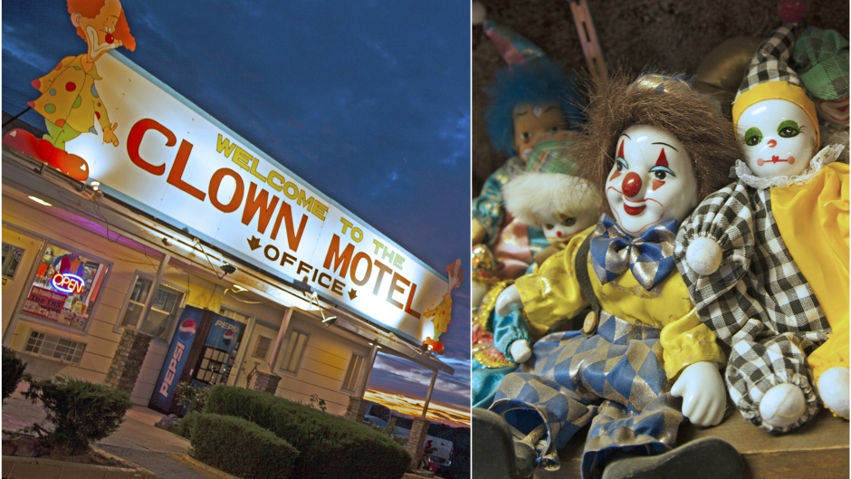

For sale: Clown-themed motel next to cemetery in Nevada

For around $1.1 million, a clown-themed motel in Nevada could be yours.
After taking it over 22 years ago, Bob Perchetti — owner of The Clown Motel in the small town of Tonopah — has decided it's time to sell.
July 28
Tesla's Musk hands over first Model 3 electric cars to early buyers
Tesla Chief Executive Officer Elon Musk said on Friday the Model 3 had over half a million advance reservations as he handed over the first 30 to employee buyers, setting the stage for the biggest test yet of the company's strategy to become a profitable, mass market electric car maker.
July 28